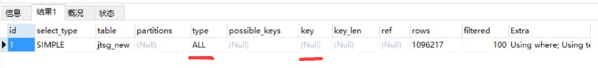
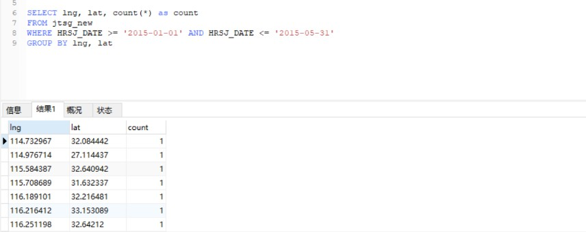
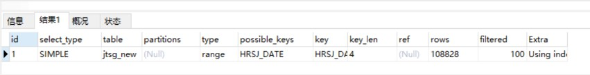
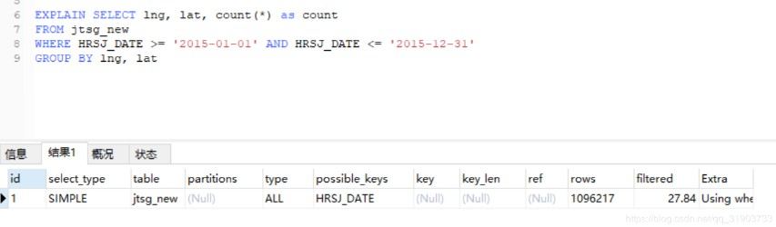
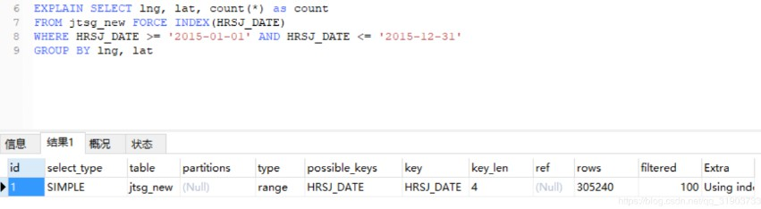

最近项目中使用的数据达到了百万级别，如果不进行优化，在查询时速度就会很慢，现在想的是先在SQL语句上加上索引进行优化，但有时候MySQL并不会像我们预想的那样使用索引。MySQL提供了Explain命令能够很好地查看sql语句执行情况，是否使用了索引，查询的记录数等等。
where中进行函数运算
我在项目中需要以时间为筛选条件，如查询2018-01-01到2018-05-31之间的记录数，但我的字段的日期类型是datetime类型的(2018-01-01 17:00:30) ，我首先想到的是使用MySQL的DATE函数进行转换，SQL语句如下：1
2
3
4SELECT lng, lat, count(*) as count
FROM jtsg_new
WHERE DATE(HRSJ) >= '2015-01-01' AND DATE(HRSJ) <= '2015-05-31'
GROUP BY lng, lat
查询时间为7.852秒.
使用Explain命令对上述sql语句进行分析：1
2
3
4EXPLAIN SELECT lng, lat, count(*) as count
FROM jtsg_new
WHERE DATE(HRSJ) >= '2015-01-01' AND DATE(HRSJ) <= '2015-05-31'
GROUP BY lng, lat

我将HRSJ作为主键放在where里，但是通过结果发现并没有使用索引，type为ALL，key值也为null.
经过查询资料发现，在where字句中对索引字段进行函数运算(DATE)将会使MySQL放弃使用索引。于是我想的是在数据库中新增一个HRSJ_DATE字段将HRSJ的日期提取出来
新增字段使用索引
首先新增一个date类型字段1
ALTER TABLE jtsg_new ADD COLUMN HRSJ_DATE DATE
使用update语句更新HRSJ_DATE 字段1
UPDATE jtsg_new SET HRSJ_DATE = DATE(HRSJ)
增加HRSJ_DATE作为索引：1
ALTER TABLE jtsg_new ADD INDEX(HRSJ_DATE)
最后执行查询语句：

可以看到只需要0.905秒时间，速度快了很多，使用Explain命令分析结果：

type变为了range, 表示区间索引，key值也变为了我们的索引列, rows代表扫描的行数比之前全表扫描减少了很多。
如果将范围进一步扩大，查询12个月的记录

结果type又变为了ALL, 和之前一样做全表扫描了，进一步分析明白原来MySQL中当记录数大于总表记录的百分之多少时，MySQL会放弃使用索引而进行全表扫描。
强制使用索引
这时可以在SQL语句中强制使用索引：1
2
3
4SELECT lng, lat, count(*) as count
FROM jtsg_new FORCE INDEX(HRSJ_DATE)
WHERE HRSJ_DATE >= '2015-01-01' AND HRSJ_DATE <= '2015-12-31'
GROUP BY lng, lat
分析结果如下：

可以看到，MySQL又使用了索引，并且查询速度也加快了不少。
这是在项目中第一次进行MySQL性能优化实践，后面还要继续深入研究MySQL的优化技巧。
参考：
1.https://my.oschina.net/xsh1208/blog/496254
2.https://blog.csdn.net/lkforce/article/details/79148002
![微信分享二维码]()